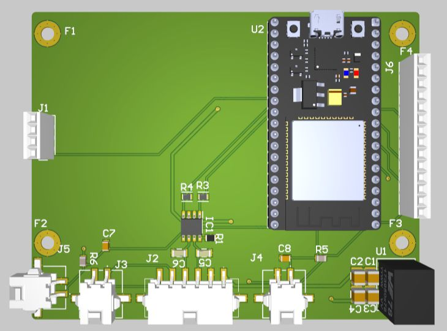

ShieldEsp · EESC-USP Tupã
ShieldESP display
An ESP32-based board for the vehicle display.

Board details
- Controller
- NODEMCU-32S / ESP32
- Communication
- L9616-TR CAN transceiver
- Connections
- Display, touch and SD chip-select signals
- Interface work
- Display front end